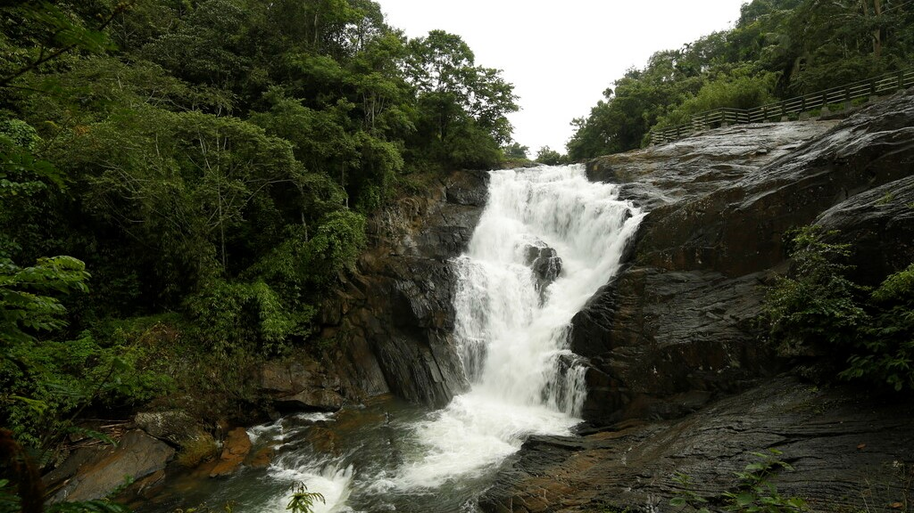
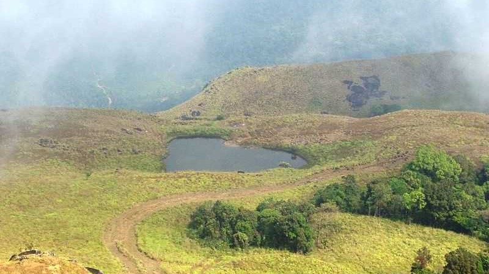

Wayanad is a rural district in Kerala state, southwest India. In the east, the Wayanad Wildlife Sanctuary is a lush, forested region with areas of high altitude, home to animals including Asiatic elephants, tigers, leopards and egrets. In the Ambukuthi Hills to the south, Edakkal Caves contain ancient petroglyphs, some dating back to the Neolithic age.
Wayanad, the green paradise is nestled among the mountains of the Western Ghats, forming the border world of the greener part of Kerala. Clean and pristine, enchanting and hypnotizing, this land is filled with history and culture. Located at a distance of 76 km. from the sea shores of Kozhikode, this verdant hill station is full of plantations, forests and wildlife.